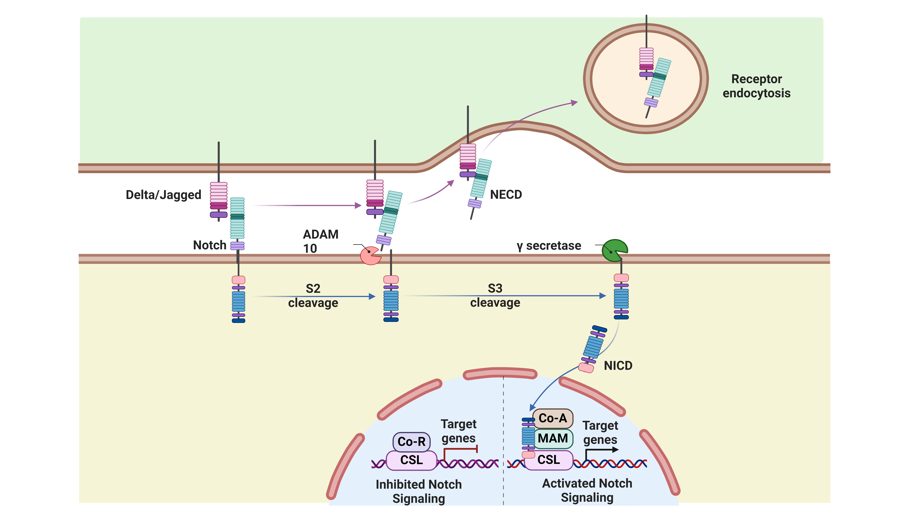

Notch signaling pathway
| Pathway Name: Notch signaling pathway - Homo sapiens (human) |
| Pathway Source: KEGG Pathway |
| Genes involved in Wnt signaling pathway: ---- |
- 
The Notch signaling pathway is an evolutionarily conserved, intercellular signaling mechanism essential for proper embryonic development in all metazoan organisms in the Animal kingdom. The Notch proteins (Notch1-Notch4 in vertebrates) are single-pass receptors that are activated by the Delta (or Delta-like) and Jagged/Serrate families of membrane-bound ligands. They are transported to the plasma membrane as cleaved, but otherwise intact polypeptides. Notch signaling pathways in CRC. Mind bomb-1 (Mib1), an E3 ubiquitin ligase, promotes the endocytosis of Notch ligands. The extracellular domain of Notch ligands (DLL1 or JAG1 shown) consists of an N-terminal MNNL domain, DSL domain, EC and vWF. The Notch receptors are transmembrane proteins containing extracellular or NECD (EC, LNR, S1 and S2), transmembrane domain or TMD and intracellular domains or NICD (ANK, TAD and PEST). Activation of Notch pathway is initiated by binding of Notch ligands to Notch receptors which leads to their conformational changes. Then, S2 cleavage site is exposed for ADAM to remove the extracellular region. Subsequently, S3 cleavage occurs by γ-secretase which removes the transmembrane region and releases NICD. Then NICD translocates into the nucleus, and binds to the inactive CSL transcription factor which forms a complex. Instead co-activators, such as MAML could bind to CSL, resulting in activating of this transcriptional complex. The figure was created with BioRender.com (accessed on 30 May 2024) and was exported under a paid subscription.